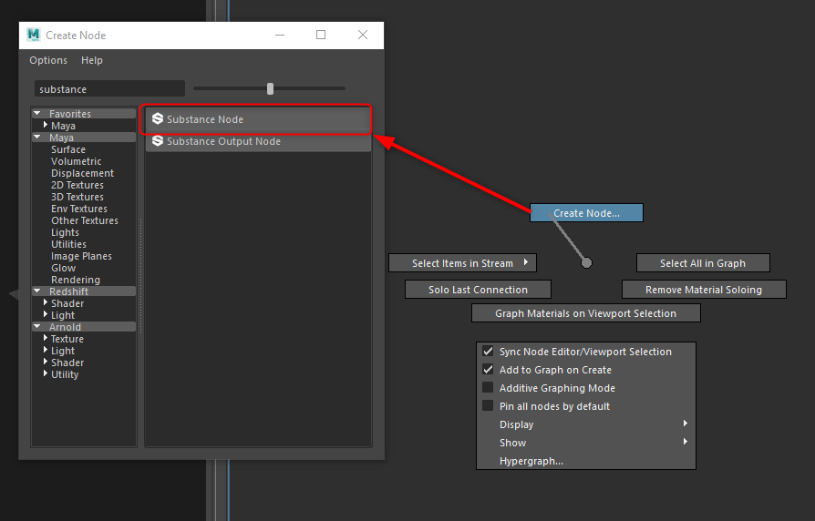

Open the Hypershade and in the Node Editor, right-click and swipe up in the marking menu to choose create node. This opens the Create Node window. From there, you can search for the Substance node.

You can also hit tab in the node editor and in the text field, type substance and this will filter to the substance options. From the options, choose Substance Texture.